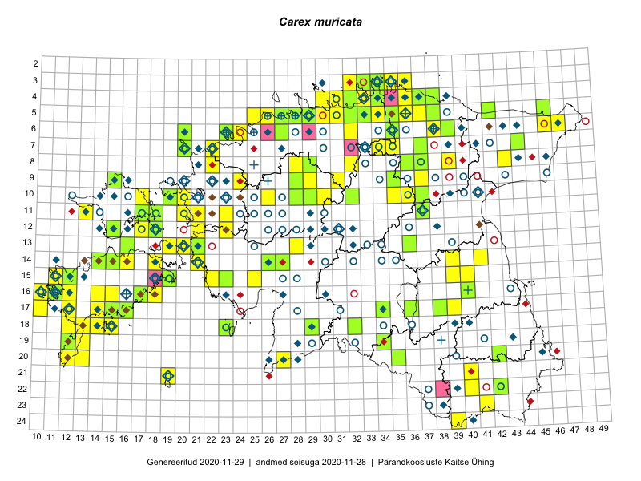

Carex muricata
Uuendatud: 2016-12-01
Kaardile koondatud taksonid: Carex muricata L.

Kaart põhineb 112 kirjel, neist vaatlusi 110 ja eksemplare 2.
Kuvatud viited 20 esimesele andmebaasikirjele, ülejäänud PlutoFis
- Rein Kalamees: 2015-06-08: 05-32: ala
- Toomas Kukk, Eerik Leibak: 2015-08-12: 10-17: ala
- Rein Kalamees, Kersti Püssa: 2015-08-04: 03-33: ala
- Rein Kalamees, Kersti Püssa: 2015-08-09: 05-31: ala
- Rein Kalamees: 2015-08-09: 05-31: ala
- Rein Kalamees, Kersti Püssa: 2015-09-02: 03-36: ala
- Peedu Saar: 2015-07-15: 15-39: GPS punkt
- Ott Luuk, Toivo Sepp: 2015-07-29: 09-31: ala
- Peedu Saar, Ott Luuk: 2015-06-21: 14-41: ala
- Peedu Saar, Elle Roosaluste: 2015-07-12: 13-20: ala
- Peedu Saar: 2015-07-15: 15-39: ala
- Peedu Saar, Ott Luuk: 2015-07-27: 10-35: ala
- Toomas Kukk, Eerik Leibak: 2015-08-11: 09-15: ala
- Rein Kalamees, Kersti Püssa: 2015-06-30: 04-31: ala
- Toomas Kukk, Tiit Hallikma: 2015-06-11: 11-29: ala
- Toomas Kukk: 2015-06-19: 06-27: ala
- Toomas Kukk: 2014-06-21: 16-10: ala
- Toomas Kukk: 2014-06-18: 18-15: ala
- Toomas Kukk: 2014-06-18: 18-14: ala
- Tiit Hallikma, Toomas Kukk: 2015-06-11: 10-29: ala